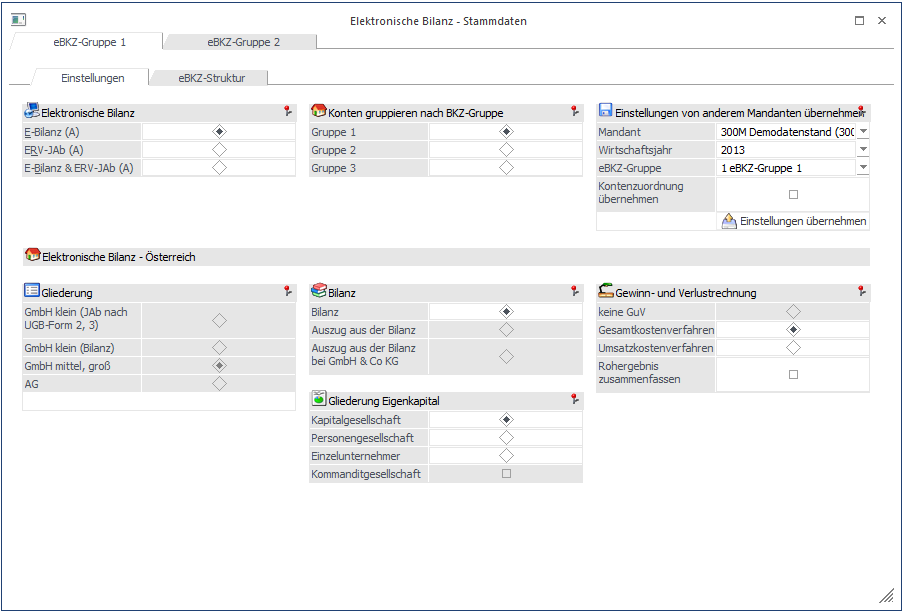
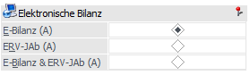
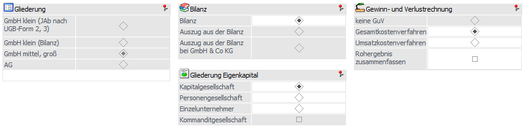
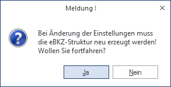
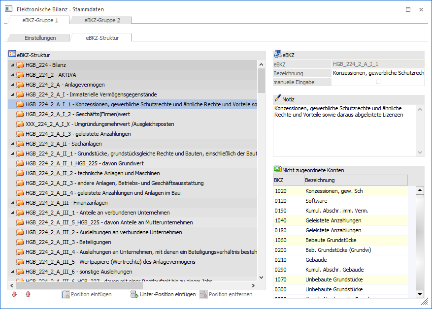
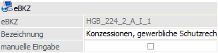
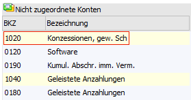
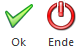

Im Menüpunkt…
1 WinLine FIBU
1 Auswertungen
1 Elektronische Bilanz
1 Stammdaten
… erfolgt die Zuordnung der Konten zur eBKZ Struktur.

Zuerst muss festgelegt werden, wofür die eBKZ-Struktur verwendet werden soll (E-Bilanz, ERV-JAb (Firmenbuch) oder beides).
Ø Elektronische Bilanz

Abhängig von dieser Einstellung werden bei den weiteren Eingabefeldern Vorbelegungen getroffen bzw. werden bestimmte Eingabefelder die auf Grund der Einstellung nicht mehr gefüllt werden dürfen ausgegraut.

Ø Konten gruppieren nach BKZ-Gruppe
In diesem Fensterbereich kann festgelegt werden, nach welcher BKZ-Gruppe die Konten für die Zuordnung zur eBKZ gruppiert werden sollen.
Ø Einstellungen von anderem Mandanten übernehmen
Falls bei einem anderen Mandanten die eBKZ Struktur bereits hinterlegt wurde, kann diese in den derzeit aktuellen Mandanten übernommen werden. Weiters steht zur Auswahl die Zuordnung aus einem anderen Wirtschaftsjahr oder von einer bestimmten eBKZ Gruppe zu übernehmen. Auch die Übernahme der Kontenzuordnung ist möglich.
Ø
Mittels "Einstellungen übernehmen" Button werden die Einstellungen des selektierten Mandanten übernommen.
Ø eBKZ-Struktur
Nachdem alle Einstellungen durchgeführt wurden, kann im Register "eBKZ Struktur" die entsprechende Zuordnung erfolgen.
Beim Wechsel in das Register "eBKZ-Struktur" erscheint die Meldung:

Wird diese Meldung mit "Ja" bestätigt, so kann man mit der Zuordnung beginnen.
Beim Ändern der Einstellungen (und damit verbundenem Neu-Erzeugen der Struktur) kann die bestehende Kontenzuordnung weiterverwendet oder wahlweise auch zurückgesetzt werden.

Im Register eBKZ-Struktur kann die Struktur bearbeitet werden:
ü an definierten Stellen können Positionen eingefügt werden (nur ERV-JAb)
ü zu definierten Positionen können Unter-Positionen erstellt werden
ü freie Positionen können auch wieder gelöscht werden
Hinweis
Da auch die eBKZ des Hauptbuchkontos und der entsprechenden Nebenbuchkonten übereinstimmen müssen, werden in der eBKZ-Strukturansicht für nicht zugeordnete Konten und in der Baumansicht keine Nebenbuchkonten angezeigt. Wird nun ein Konto in eine andere eBKZ verschoben oder aus dem Baum entfernt, werden auch die zugeordneten Nebenbuchkonten entsprechend aktualisiert. Wenn ein Personenkonto einem Hauptbuchkonto zugeordnet ist, wird es auch in den Debitoren/Kreditoren-Einträgen im Baum nicht mehr berücksichtigt. Auch nach dem Übernehmen der Kontenzuordnung von einem anderen Mandanten werden die eBKZs aus dem Hauptbuchkonten in die zugeordneten Nebenbuchkonten übernommen.
Ø eBKZ
Im Feld eBKZ werden die entsprechende eBKZ und deren Bezeichnung angezeigt. Ist der Wert im Feld Bezeichnung nicht grau hinterlegt, so kann dieser editiert werden. Sollte die Bezeichnung grau hinterlegt sein, so ist eine Umbenennung nicht erlaubt.

Wurde eine Bezeichnung umbenannt und die Umbenennung soll wieder verworfen werden, so kann mittels F3 Taste die ursprüngliche Bezeichnung des Feldes wiederhergestellt werden. Dazu muss der Fokus in der Struktur auf das betroffene Feld gesetzt werden und im Feld Bezeichnung die F3 Taste gedrückt werden.
Ø manuelle Eingabe
Diese Checkbox kann nur für Positionen aktiviert werden, denen auch Konten zugeordnet werden können (aber noch keine Konten zugeordnet sind), wenn die Checkbox gesetzt ist, wird die Zuordnung von Konten unterbunden, d.h. eine Kombination von beidem ist nicht möglich. Die Option wird in weiterer Folge dazu benötigt, die entsprechende Bilanzposition bei der Ausgabe editierbar zu machen.
Ø Notiz
Zu jeder Position können Notizen erfasst werden, die dann als Anhang auch in die XML-Datei übernommen werden können
Ø Nicht zugeordnete Konten
All jene Konten, die noch keiner eBKZ zugeordnet wurden, werden in dieser Tabelle dargestellt. Die Konten sind je nach Einstellung im Register Einstellungen nach der BKZ angeordnet.

Mittels Drag & Drop können die Konten der Struktur zugeordnet werden. Dies kann einzeln pro Konto erfolgen, oder man klickt den gelben "Haupteintrag" an, dann werden auch die dazugehörigen Konten zugewiesen. (Wird der gelbe Eintrag "Konzessionen, gew. Sch" per Drag & Drop auf die Struktur gezogen, so werden auch die Einträge Software und Kumul. Abschr. imm. Verm. dieser Position zugeordnet.) Wurde etwas falsch zugewiesen, so kann die Zuweisung mittels "Entfernen" Button wieder rückgängig gemacht werden
Hier (und auch im Kontenstamm) wird geprüft, dass Bilanzkonten nur zu Bilanzpositionen bzw. Erfolgskonten nur GuV-Positionen zugeordnet werden können.
Falsch zugeordnete Konten können mittels "Entfernen"-Button aus der Struktur entfernt werden.
Tabellenbuttons
Ø
Durch Anklicken dieses Buttons wird das gesamte Strukturverzeichnis zugeklappt. Das bedeutet, dass nur noch die Hauptstrukturen sichtbar sind.
Ø
Durch Anklicken dieses Buttons wird das gesamte Verzeichnis aufgeklappt. Es ist jede einzelne Position zu sehen und kann bearbeitet werden.
Ø
Mittels "Position einfügen" Button kann die eBKZ Struktur erweitert werden. Dies ist nur bei bestimmten Positionen möglich.
Ø
Mittels "Unter-Position einfügen"-Button kann die eBKZ Struktur erweitert werden. Dies ist nur bei bestimmten Positionen möglich
Ø
Mittels "Entfernen" Button kann eine manuell eingefügte Position bzw. Unterposition wieder entfernt werden.
Weiters können bereits zugeordnete Konten wieder zu den nicht zugeordneten Konten verschoben werden.
Buttons

Ø OK
Mittels OK Button oder F5-Taste werden der eBKZ Stamm und die Kontenzuordnung gespeichert.
Ø Ende
Durch Drücken des "Ende"-Button oder der ESC-Taste wird das Fenster geschlossen.